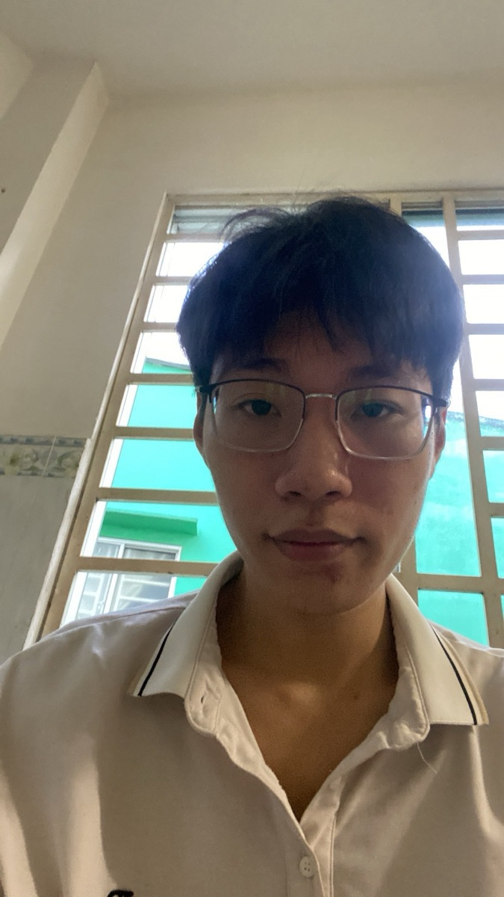

Hardware-aware
GPIO, ADC, I2C, UART, RS485 và đặc tính nguồn/tín hiệu.
SYSTEM PROFILE / 01
Embedded Systems × Edge AI × Industrial IoT
Sinh viên Kỹ thuật Vật lý tại HCMUS, tập trung vào hệ thống nhúng và IoT công nghiệp. Tôi xây dựng trọn đường đi của dữ liệu: từ cảm biến, firmware và xử lý tín hiệu ở biên đến API, cơ sở dữ liệu và dashboard giám sát.
PROFILE / 02

Mình quan tâm đến phần giao nhau giữa phần cứng, firmware và phần mềm: đọc đúng tín hiệu, xử lý ổn định trên thiết bị có tài nguyên giới hạn, rồi đưa dữ liệu đến đúng nơi để kỹ sư vận hành có thể ra quyết định.
Mục tiêu thực tập là tham gia vào một đội embedded/IoT có quy trình kỹ thuật rõ ràng, được kiểm thử trên phần cứng thật và học cách đưa prototype đến gần sản phẩm công nghiệp.
GPIO, ADC, I2C, UART, RS485 và đặc tính nguồn/tín hiệu.
Ưu tiên đo, hiệu chuẩn, kiểm tra dữ liệu thật trước khi tối ưu mô hình.
Firmware, giao tiếp, API, lưu trữ và giao diện là một chuỗi thống nhất.
SELECTED WORK / 03
Ba bài toán kết nối thế giới vật lý với phần mềm giám sát.
Hệ thống giám sát sức khỏe động cơ, lấy mẫu cảm biến trên ESP32, suy luận lỗi ngay tại biên và gửi telemetry đã xác thực lên dashboard theo thời gian thực.
Prototype kiểm soát ra vào: camera ghi nhận khuôn mặt, Python/OpenCV xác minh người dùng, sau đó sự kiện khóa cửa được chuyển qua MQTT đến thiết bị và dashboard.
Node quan trắc nước thải thời gian thực, đọc đầu dò công nghiệp qua RS485/Modbus, truyền dữ liệu bằng 4G/Wi-Fi và hiển thị trên dashboard vận hành.
CAPABILITY MAP / 04
Không chỉ liệt kê công nghệ - đây là cách chúng kết nối trong một hệ thống.
LANGUAGE LOG
EDUCATION / 05
Các học phần liên quan: Lập trình cơ bản, Lập trình hướng đối tượng, Cấu trúc dữ liệu và giải thuật, Toán kỹ thuật, Điện tử cơ bản, Xử lý tín hiệu số, Python, MATLAB và Phân tích dữ liệu.
OPEN CHANNEL / 06
Mình đang tìm cơ hội thực tập Embedded Systems / Industrial IoT tại TP.HCM, đặc biệt với các bài toán cảm biến, firmware, truyền thông thiết bị và Edge AI.
hoangminhan2468@gmail.com ↗ +84 938 508 330